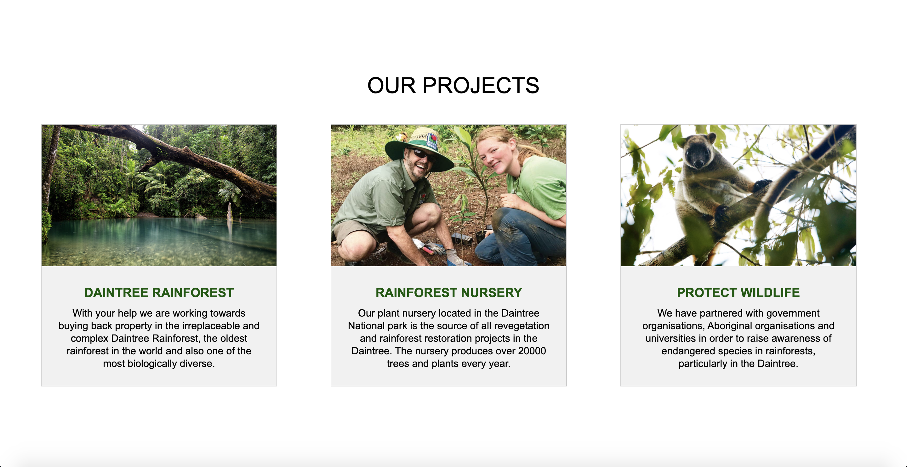
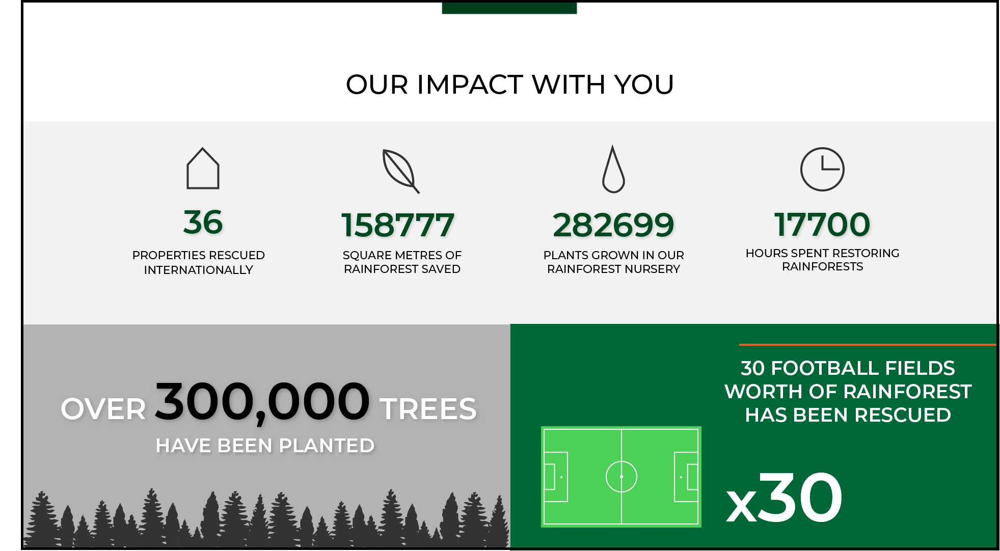
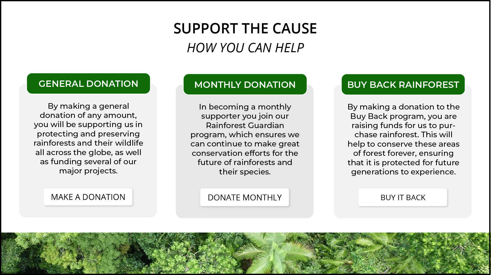

Home Landing Page
Both the original mockup and the final website incorporate a simplistic navbar at the top of the website that allows users to navigate straight to their desired section. The sections in the mockup include 'Our Projects', 'Our Impact' and the 'Make a Donation' page. In the final design, I chose to add an extra section for contact details specifically called 'Contact Us', as this will allow users to feel more connected to the charity and improves the overall usability of the website in providing a direct link to details that will assist them.
I decided to change the proposed logo for the Rainforest Rescue charity to incorporate a more interesting visualin the form of a rainforest leaf behind the charity name. Shades of green were utilised in the graphic to communicate the intentions of the charity in a subtle way. Additionally, the colour green is a calming colour that has a 'balancing and calming effect' (Chapman, 2010), as well as being representative of the natural world.
Furthermore, the white text provides more of a contrast against the dark grey background of the final website navbar, which I decided to change from the original mockup as the visability of such was not as clear. In the mockup of the home landing page, the white text is slightly lost as the opacity of the navbar is low, meaning that the white sky of the image behind causes the section headings to be less visable.
The image portion of the mockup and the final website is very similar. The charity slogan can be seen in both in bold white text, providing contrast against the background image. This is further accentuated through a drop shadow on both,which assists in making the text 'pop' against the darker background. The background on the final website home landing section features volunteers walking in a group in a tropical rainforest area, an image suited to the intentions of the charity. I kept the same background image on both the mockup and the final website as it communicates the community aspect of the charity and automatically invites users into this community that is friendly and welcoming upon first glance at the website. I also edited this image to be darker than the original as it allows the slogan to be more visible, as well as looking more professional and 'aesthetic'. Although this photo is not of Rainforest Resscue charity volunteers, the ideal website would include this aspect.
After some consideration, I decided not to include the image carousel feature behind the image slogan as this may complicate the minimalistic design of the landing section, as well as distract from the main slogan that invites users to make a change together with the charity.
Mockup
description

Final Webpage
description

Our Projects Section
description
Mockup
description

Final Webpage
description
Our Impact Section
description
Mockup
description
Final Webpage
description

Support the Cause Section
description
Mockup
description
Final Webpage
description
Donation Pages
description
Mockup
description
Final Webpage
description
https://www.smashingmagazine.com/2010/01/color-theory-for-designers-part-1-the-meaning-of-color/#:~:text=Green%20has%20many%20of%20the,stability%2C%20renewal%2C%20and%20nature.
References
- Australia Giving 2019: An Overview of Charitable Giving in Australia. (2019). Retrieved 28 October 2020, from https://good2give.ngo/wp-content/uploads/2019/03/CAF-Australia-Giving-Report-2019.pdf
- Charity: Water. (2013). September Campaign 2013 [Image]. Retrieved from https://www.charityemailgallery.com/appeal/charity-water-for-100-villages-in-orissa/
- Clerk, G. (2019). Elegant senior woman portrait stock photo [Image]. Retrieved from https://www.istockphoto.com/photo/elegant-senior-woman-portrait-gm1155922654-314869890
- Clerk, G. (2019). Elegant senior woman portrait stock photo [Image]. Retrieved from https://www.istockphoto.com/photo/elegant-senior-woman-portrait-gm1155922654-314869890
- ElegantThemes. Divi Layouts Pack [Image]. Retrieved from https://www.elegantthemes.com/layouts/community-non-profit/charity-landing-page
- Gregory, S. (2019). Nonprofit web design for One Drop [Image]. Retrieved from https://freshsparks.com/best-nonprofit-website-design/
- Home - Shofco. (2020). Retrieved 26 October 2020, from https://www.shofco.org/
- James Cook University. Daintree Rainforest [Image]. Retrieved from https://www.jcu.edu.au/daintree/about-us
- Madura, M. (2020). Vivanco Website Design [Image]. Retrieved from https://dribbble.com/shots/10404567-Vivanco?utm_source=pinterest&utm_campaign=pinterest_shot&utm_content=Vivanco+%F0%9F%8D%87&utm_medium=Social_Share
- Paavola, I. Generation Nutrition campaign landing page WIP [Image]. Retrieved from https://dribbble.com/shots/1501580-Generation-Nutrition-campaign-landing-page-WIP/attachments/225816
- Parfian, M. GoHunting Infographic [Image]. Retrieved from https://www.behance.net/gallery/11558161/GoFishing-GoHunting
- Projects Abroad. Rainforest volunteers [Image]. Retrieved from https://www.projects-abroad.com.au/projects/volunteer-conservation-amazon-rainforest-peru/
- Rainforest Rescue - Together we can Protect Rainforests Forever. (2017). Retrieved 26 October 2020, from https://www.rainforestrescue.org.au/
- Sedley Designs. (2019). Tree-line silhouette [Image]. Retrieved from https://www.creativefabrica.com/product/tree-line-silhouette/
- TemplateMonster. (2014). Charity Muse Template [Image]. Retrieved from https://www.templatemonster.com/adobe-muse-template/52516.html?aff=templatetime
- TemplateMonster. (2014). Environmental Responsive WordPress Theme [Image]. Retrieved from https://www.templatemonster.com/wordpress-themes/52293.html
- TemplateMonster. (2015). Charitable Donation Joomla Template [Image]. Retrieved from https://www.templatemonster.com/joomla-templates/53503.html?aff=lovetheme
- TemplateMonster. (2019). Sunrise - Charity Foundation Modern HTML5 Landing Page Template [Image]. Retrieved from https://www.templatemonster.com/landing-page-template/sunrise-charity-foundation-modern-html5-landing-page-template-78389.html?aff=tmfrog
- Teoh, V. (2017). Charity Website Concept [Image]. Retrieved from https://www.behance.net/gallery/21252079/Charity-Website-Concept
- The Royal Botanic Garden Sydney. Birds eye view of Australian Rainforest [Image]. Retrieved from https://www.rbgsyd.nsw.gov.au/Science/Rainforest-Conservation-Research/Rainforest-in-Australia
- ThemeForest. Ecology & Environment WordPress Theme - Green Planet [Image]. Retrieved from https://themeforest.net/item/ecology-environment-wordpress-theme-green-planet/21089437?utm_medium=email&utm_campaign=email_market_marketmail_mix_mar5_2018&utm_content=email_market_marketmail_mix_mar5_2018+Version+A+CID_4b6f8336e50ff422a473421075c4041c&utm_source=Envato+Mailing+List&utm_term=Green+Planet+-+Ecology++Environment+WordPress+Theme&ref=Cyrah
- ThemeForest. (2017). Rekindel Charity PSD Template [Image]. Retrieved from https://themeforest.net/item/rekindel-charity-psd-template/19523291
- ThemeForest. (2019). Wordpress Portfolio Theme Template [Image]. Retrieved from https://themeforest.net/search/wordpress%20portfolio%20theme?clickid=xckRiEXsRxyOWvAwUx0Mo3kTUkE2UVXM4S3NUg0&iradid=275988&iradtype=ONLINE_TRACKING_LINK&irgwc=1&irmptype=mediapartner&irpid=1392263&sort=sales&utm_campaign=af_impact_radius_1392263&utm_medium=affiliate&utm_source=impact_radius
- Tropical North Queensland.org. Wildlife in tree [Image]. Retrieved from https://www.tropicalnorthqueensland.org.au/things-to-do/rainforest-wildlife/
- Tu, H. Elephant In Our Community Website Design Project [Image]. Retrieved from https://www.behance.net/gallery/68523447/Website-design-Elephant-in-our-community
- Uid, S. (2020). Chariton Charity & Fundrise Website Design [Image]. Retrieved from https://dribbble.com/shots/10646706-Chariton-Charity-Fundrise-Website-Design?utm_source=pinterest&utm_campaign=pinterest_shot&utm_content=Chariton+Charity+%26+Fundrise+Website+Design&utm_medium=Social_Share
- Vamatheva, G. NatGeo Home Screen [Image]. Retrieved from https://www.canva.com/learn/visual-design-composition/?utm_source=newsletter22&utm_medium=email&utm_campaign=thisweekindesign
- WWF. WWF Campaign Poster [Image]. Retrieved from https://i.pinimg.com/originals/67/3c/c2/673cc28db9e0d2c8169c4fb8dde69464.jpg